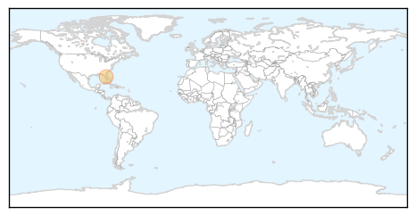
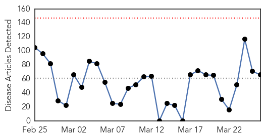
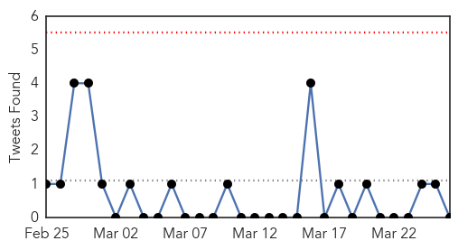
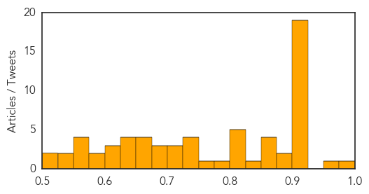

Chikungunya
30-Day Web Trend
0 alerts, 0 warnings

30-Day Twitter Trend
0 alerts, 0 warnings

Article Locations
Article Confidences

Top Articles:
Top Tweets:
-
No tweets found for Mar 26, 2015
Unknown
30-Day Web Trend
0 alerts, 0 warnings

30-Day Twitter Trend
0 alerts, 0 warnings

Article Locations
Article Confidences
Top Articles:
- 0.989
- NC flu deaths surpass 200, almost double last flu season
- 0.971
- Glades Central student tests positive for TB, health department says
- 0.917
- Chicago Tribune
- 0.917
- Chicago Tribune
- 0.917
- Chicago Tribune
- 0.917
- Chicago Tribune
- 0.917
- Chicago Tribune
- 0.917
- Chicago Tribune
- 0.917
- Chicago Tribune
- 0.917
- Chicago Tribune
- 0.917
- Chicago Tribune
- 0.917
- Chicago Tribune
- 0.917
- Chicago Tribune
- 0.917
- Chicago Tribune
- 0.917
- Chicago Tribune
- 0.917
- Chicago Tribune
- 0.917
- Chicago Tribune
- 0.917
- Chicago Tribune
- 0.917
- Chicago Tribune
- 0.917
- Chicago Tribune
- 0.910
- The world windows to Thailand
- 0.894
- Three cases of infectious TB confirmed in Devon pupils
- 0.883
- KRNV, Reno, NV
- 0.870
- Indiana Declares Public Health Emergency to Battle Worst HIV Outbreak in State History
- 0.869
- 80 HIV Cases Prompt Indiana Governor To Declare Public Health Emergency
- 0.864
- Need to fight against unseen enemy of health, the Child TB
- 0.862
- Kampala is seizing TB by the horns
- 0.834
- Child who fled from fighting dies of dehydration in Maguindanao
- 0.822
- Top researcher brings lab to Amarillo
- 0.819
- Kennewick High School Has Rare Case of Chickenpox That Exposes U - NBC Right Now/KNDO/KNDU Tri-Cities, Yakima, WA
- 0.813
- No danger of flu epidemic in Armenia – Minister - Panorama
- 0.804
- Norovirus closes third ward at Victoria Hospital
- 0.801
- HIV ‘epidemic’ hits American heartland
- 0.793
- Ind. governor addresses HIV outbreak in southeastern part of state
- 0.761
- Sambalpur Gears up For Harsh Summer
- 0.750
- How the Government Solved the Caramel Apple Listeria Outbreak
- 0.749
- 6 Bay Area residents fall seriously ill after consuming raw milk - Story
- 0.731
- Recall on raw milk distributed in Palo Alto
- 0.731
- Health officials issue warning over raw milk
- 0.724
- Liberia records highest infant mortality rate
- 0.719
- Birmingham Schools Alert Parents to Chickenpox Worries
- 0.712
- MaritiemeVacaturebank.nl
- 0.694
- Health Officials Warn of Raw Milk's Risks After Series of...
- 0.693
- Local doctor seeking glucose-testing devices for women in Guyana
- 0.680
- Bosses urged to do their bit in helping fight tuberculosis, news, Health News, AsiaOne YourHealth
- 0.667
- Bled dry: How the war in the Middle East is bringing the region to the brink of a water catastrophe - World
- 0.662
- HIV Epidemic in Indiana as Governor Declares Public Health Emergency
- 0.661
- Community effort needed to tackle TB
- 0.657
- Report reveals alarming lack of water, sanitation and hygiene in health care facilities
- 0.638
- Drug Resistance, Others Impede War on TB
Showing top 50 articles...
Top Tweets:
-
No tweets found for Mar 26, 2015